1. Các hội thi nghệ thuật và ẩm thực
- Hội thi Bonsai ĐBSCL (27/12): Quy tụ hơn 200 tác phẩm đặc sắc từ nhiều tỉnh thành, chấm điểm theo tiêu chí "Cổ - Kỳ - Mỹ" với nhiều cây kiểng trăm năm tuổi lần đầu ra mắt.
- Hội thi bánh dân gian (28/12): Xác lập kỷ lục Việt Nam với màn công diễn 125 món bánh làm từ bột gạo Sa Đéc, có sự tham gia của hơn 120 nghệ nhân và đầu bếp.
- Giao lưu dân vũ "Vũ điệu xứ hoa" (28/12): Thu hút hơn 500 hội viên phụ nữ tham gia đồng diễn trên nền nhạc quê hương, tạo không khí năng động cho lễ hội.
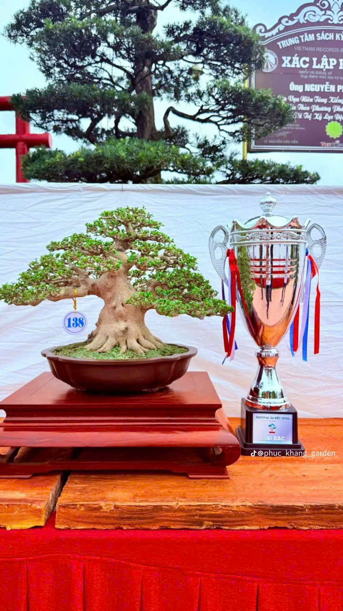
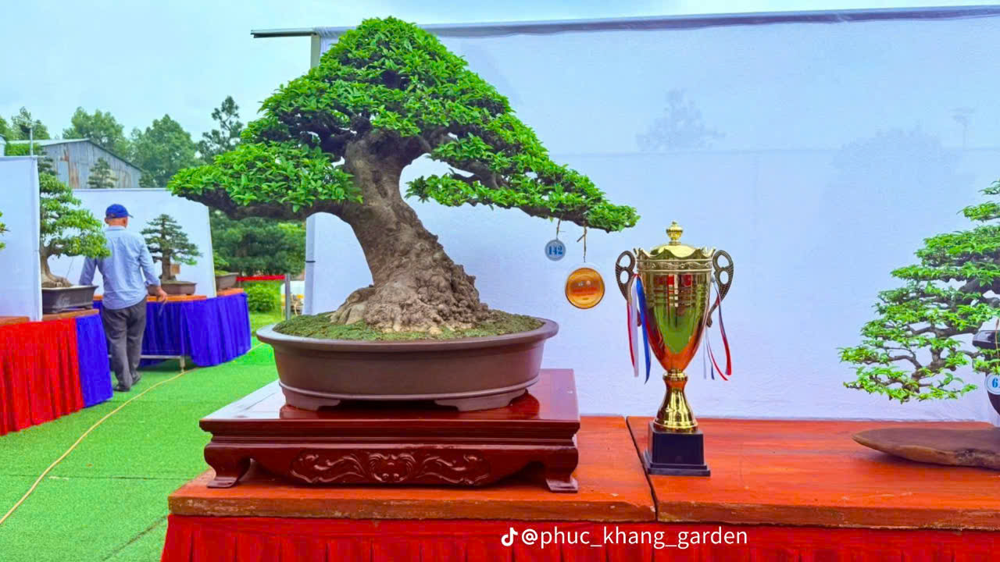
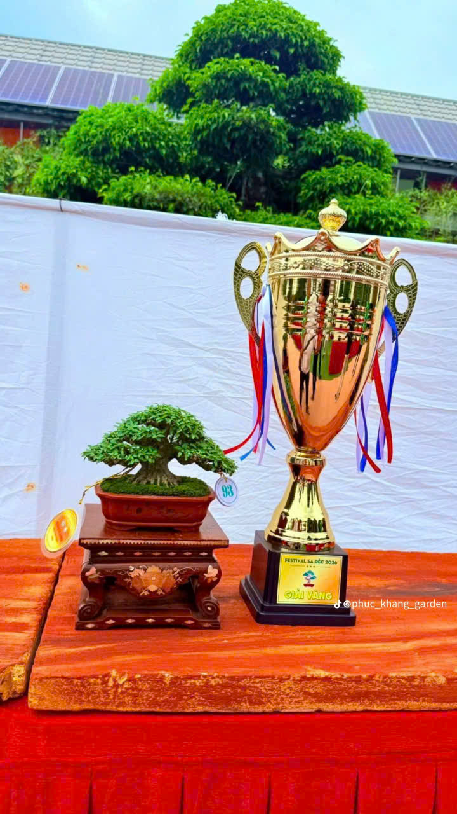
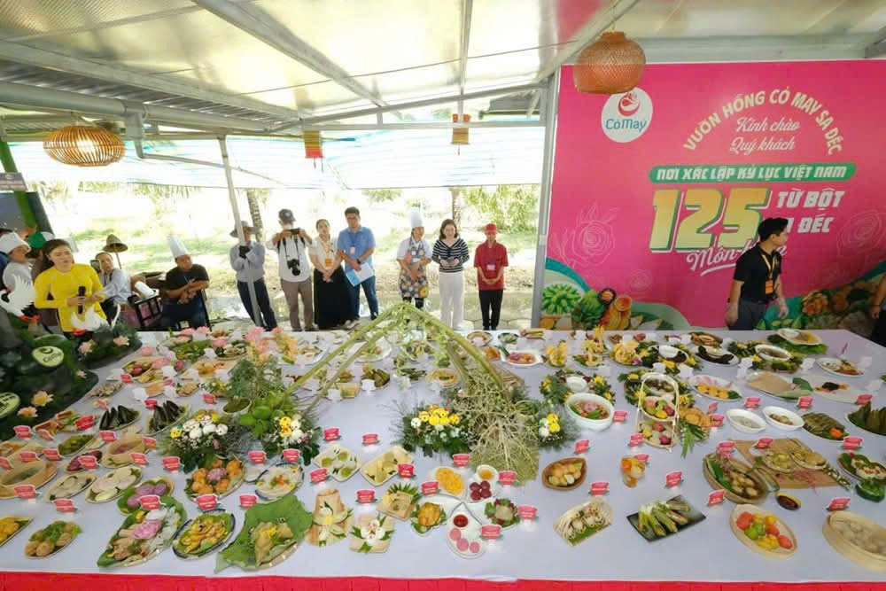
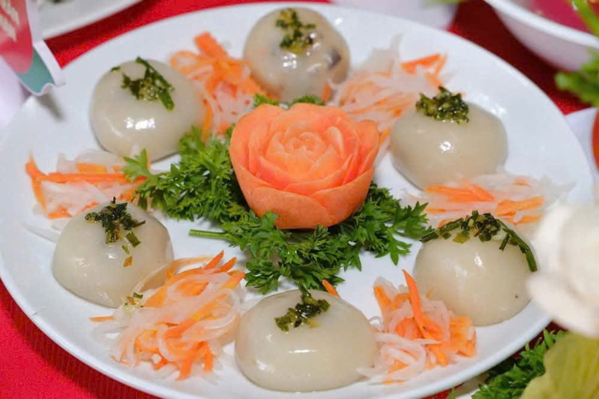
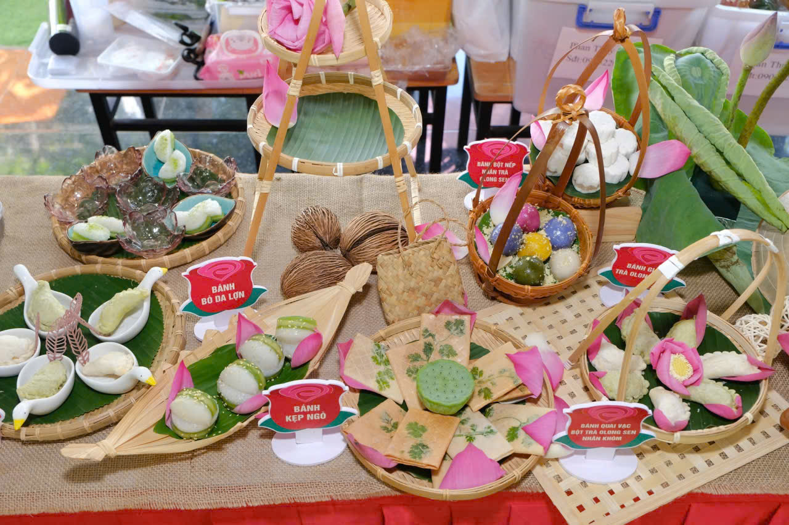
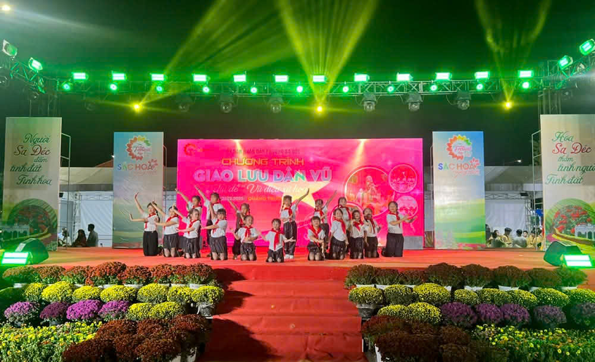
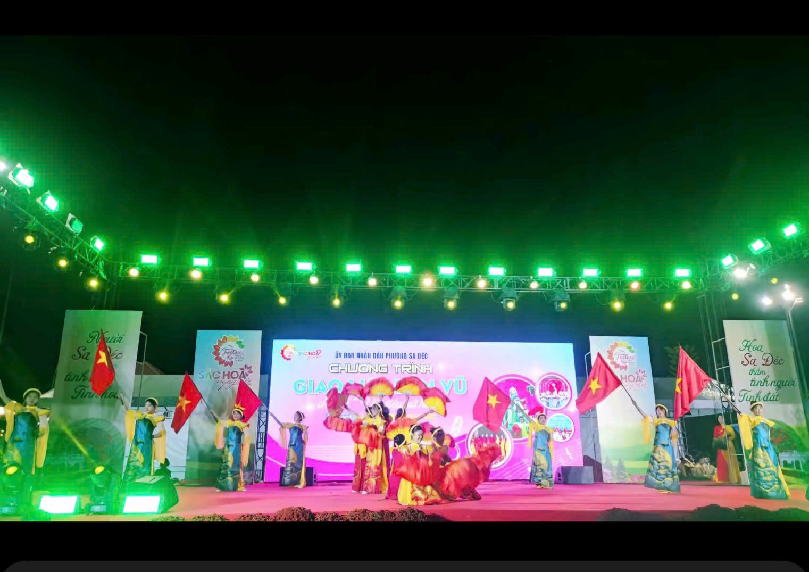
2. Các show diễn thực cảnh điểm nhấn
- "Trăm năm hương sắc làng hoa" (29/12): Sử dụng công nghệ 3D Mapping và hơn 300 diễn viên để kể câu chuyện lịch sử khai hoang, lập ấp và sự phát triển của làng hoa Sa Đéc.
- "Đêm kể một chuyện tình" (30/12): Vở nhạc kịch thực cảnh tại Nhà cổ Huỳnh Thủy Lê, tái hiện mối tình nổi tiếng giữa Huỳnh Thủy Lê và nữ văn sĩ Marguerite Duras.
3. Hoạt động lễ hội đường phố và không gian
- Lễ hội khinh khí cầu (31/12 - 03/01): Trình diễn 33-34 quả khinh khí cầu, phục vụ du khách bay treo ngắm toàn cảnh thành phố và thảm hoa rực rỡ từ trên cao.
- Đêm hội hóa trang "Vương quốc hoa" (02/01):Diễu hành xe hoa và trình diễn Carnival với các trang phục mô phỏng các loài hoa biểu tượng của Sa Đéc.
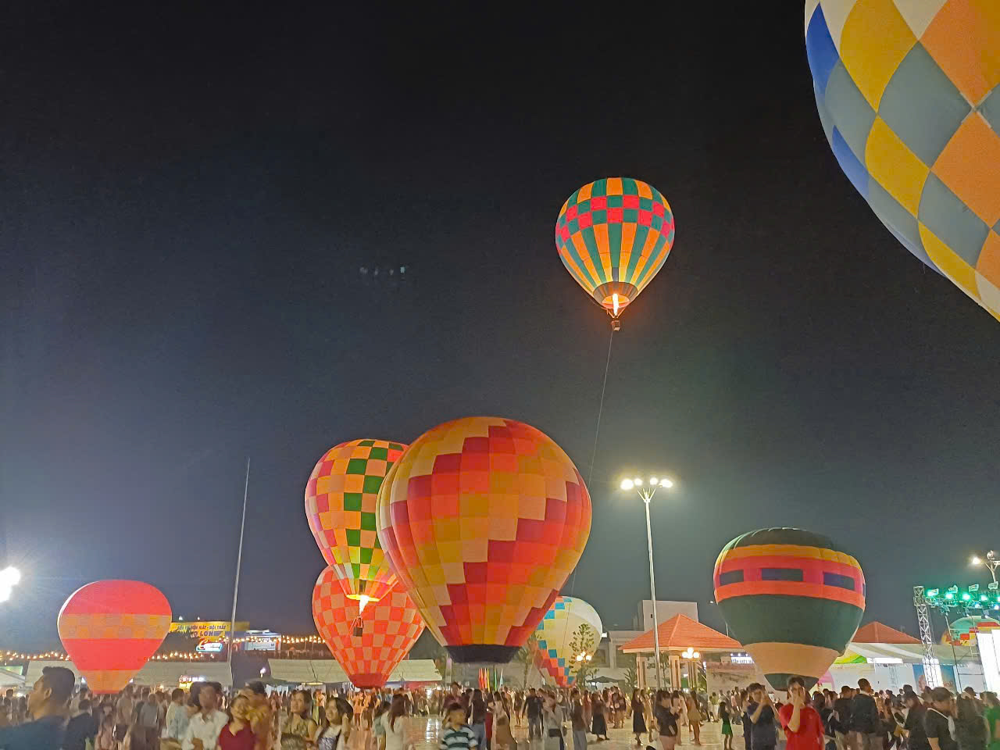
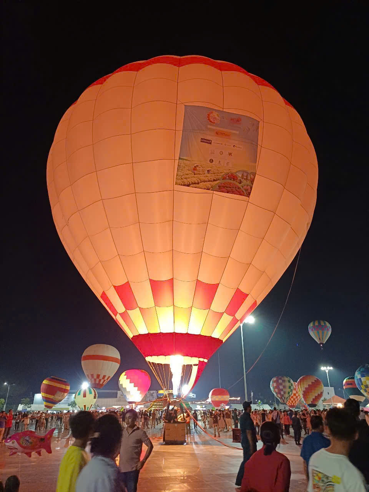
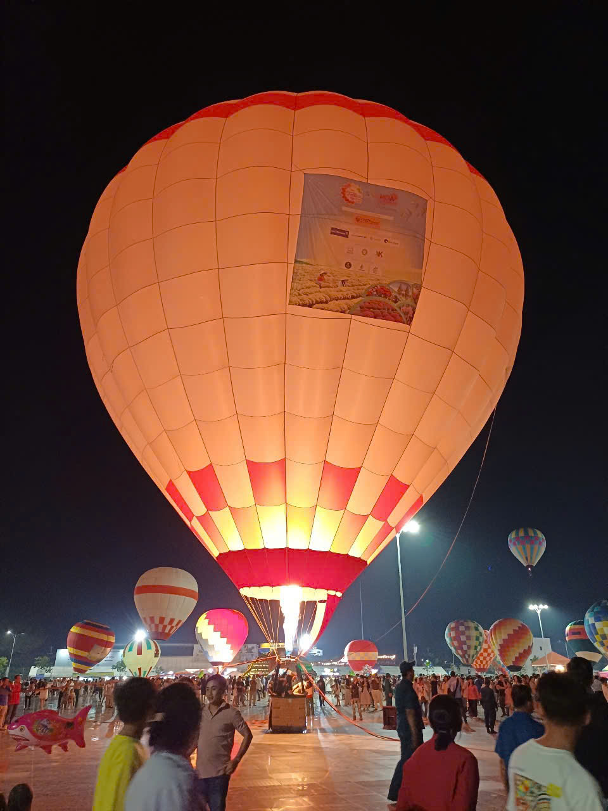
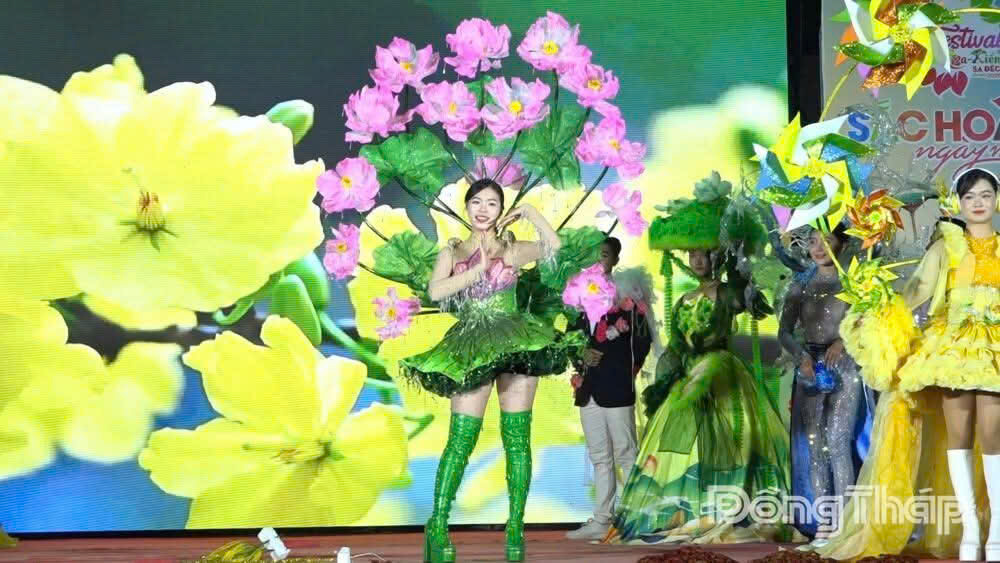
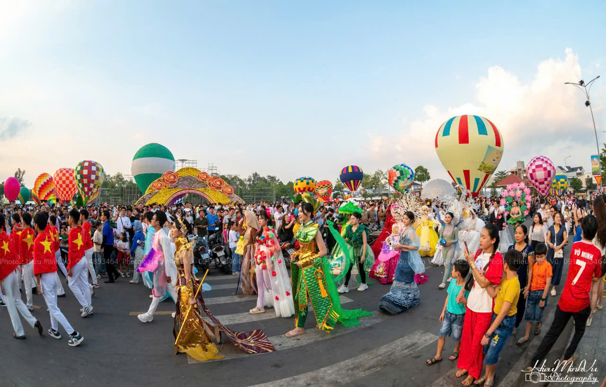
4. Tổng kết Festival
Lễ Khai mạc và Bế mạc: Được tổ chức hoành tráng tại Quảng trường Sa Đéc với sự tham gia của các nghệ sĩ nổi tiếng và kết thúc bằng màn pháo hoa tầm thấp.
Thành tựu:
- Thu hút khoảng 1,2 triệu lượt khách.
- Vinh danh nhiều nghệ nhân tiêu biểu.
- Thúc đẩy ký kết hợp tác kinh tế cho địa phương.